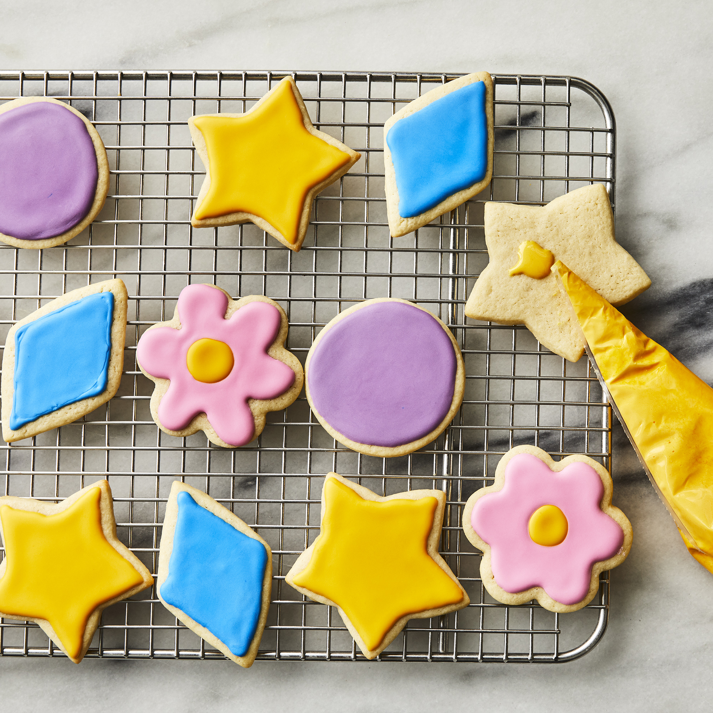

Sugar Cookie

Description
Using this recipe for The Best Rolled Sugar Cookies, you can roll out the sugar cookie dough, cut it into all sorts of shapes and sizes, and decorate the cookies to suit the occasion. So, let's dive in and see how to make sugar cookies from scratch following this recipe, with lots of tips and tricks along the way to ensure cookie-baking success.
Ingredients
- Butter
- White Sugar
- Vanilla Extract
- Flour
- Baking Powder
- Salt
Steps
- Cream together butter and sugar in a large bowl with an electric mixer until smooth. Beat in eggs and vanilla. Stir in flour, baking powder, and salt. Cover, and chill dough for at least 1 hour (or overnight).
- Preheat oven to 400 degrees F (200 degrees C).
- Lightly dust a work surface with flour. Roll out dough to 1/4 to 1/2 inch thickness. Cut into shapes with any cookie cutter. Place cookies 1 inch apart on ungreased baking sheets.
- Bake in the preheated oven until cookies are lightly browned, 6 to 8 minutes. Carefully transfer cookies to a wire rack and cool completely before decorating.